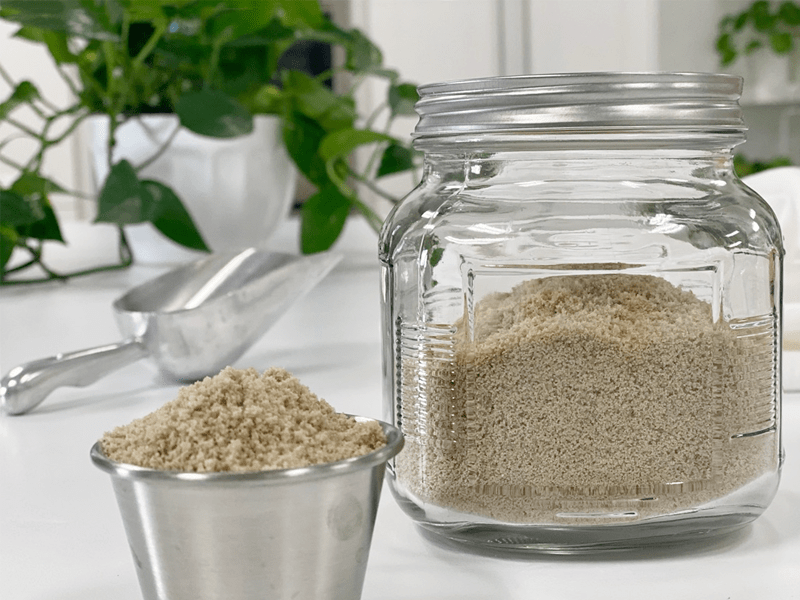
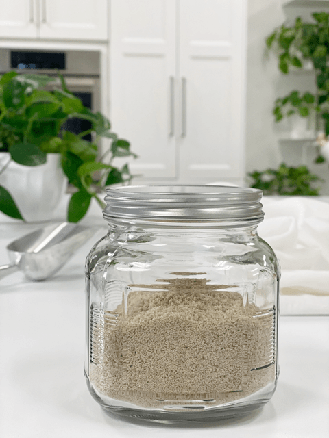

Sunflour – Sunflower Seed Flour
I have been asked quite a bit about providing an alternative to nut flour… So here we go… Sunflour from sunflower seeds! When soaking the sunflower seeds, use a glass bowl so that any bad stuff in plastic doesn’t leach into the water.

Deactivate the Enzyme Inhibitors
We will be adding Himalayan Sea Salt to the soak water because the salt helps to deactivate the enzyme inhibitors. Phytic acid is one of these inhibitors that we are deactivating because it makes the seed harder to digest.
It also inhibits the absorption of calcium, zinc, copper, iron, and magnesium. Long-term consumption of phytic acid can lead to many health issues; mineral deficiencies, impaired immune function, inflammation, allergies, anemia, and hormone imbalances.
If you are new to the idea of soaking nuts, seeds, or grains, I would like to encourage you to take the plunge and start implementing this process into your food preparation routines. It may seem time-consuming at; first, new things usually do, but before long, it will become second nature to you. And it is straightforward to do! The best thing is to create a routine.
Time Saving Tip
Every time you purchase raw sunflower seeds, bring them home… immediately place them in a bowl as instructed below. Then just let them soak while you are cleaning the house, helping your little ones with homework, while you sleep, or while you spend countless hours surfing through Nouveau Raw (hehe).
After they are done soaking, dehydrate them, place them in a mason jar, and then label and store in the fridge or freezer. Now your seeds are ready whenever you get a wild hair to create a raw food dish or need a quick snack. They take on a different consistency when they have gone through this process. They get crunchier, lighter, and to me, the flavor is more interesting. You can almost see how different they are in the photo to the right. Almost paper-like.
Why soak sunflower seeds?
- To remove or reduce phytic acid.
- To remove or reduce tannins.
- To neutralize the enzyme inhibitors.
- To encourage the production of beneficial enzymes.
- To increase the number of vitamins, especially B vitamins.
- To make digestion easier.
- To make the proteins more readily available for absorption.
- To help prevent mineral deficiencies and bone loss.
- To help neutralize toxins in the colon and keep the colon clean.

Ingredients:
Yields 5 cups flour
- 4 cups raw sunflower seeds, soaked
- 8 cups water
- 1 Tbsp Himalayan pink salt
Preparation:
- Use a glass bowl for the soaking process.
- In a separate container, dissolve the sea salt in freshwater, then pour it over seeds, be sure to use enough water to cover them.
- You will need 2 times the amount of water as seeds in the bowl.
- Leave in a warm location for the specified time. Lay a clean cloth over the bowl as a cover; this allows the contents to breathe.
- After soaking, drain into a colander and be sure to rinse thoroughly. Use the soak water to feed your houseplants.
- Spread the seeds out on the mesh dehydrator sheets in a single layer and dry them at 115 degrees (F) until they are thoroughly dry and crisp. (6-8 hours)
- Make sure they are completely dry. If not, they could mold, and won’t have that crunchy, yummy texture.
- I like to prepare a big batch to save time and energy when using my dehydrator. This way, I always have properly prepared seeds on hand for snacks, salads, and recipes. It is best to store the dehydrated nuts in the fridge to extend their shelf life and to keep them crisp.
- To grind into flour, you can use a Vitamix dry container, food processor, or Bullet. I prefer to use the Bullet and grind 1/2 cup at a time so that I can get it to a fine powder. It is best to create the flour as it is needed.
© AmieSue.com